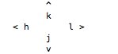

Vim commands
-
To move left, right, up, and down

-
To delete a letter _ x
-
To undo _ u
- To move to the end of the line and to put in insert move _ shift+a
- To delete a word _ d+w
- To delete the whole line _ d
- To delete the whole line from the cursor postion _ d+shift+$
- To the beginning of the line _ 0
- To the end of the line _ shift+$
- To move to number of words _ no+w (eg:3w will move 3 words from the start)
- To move to number of words backwords _ no+b (eg:3b will go backwords 3 words)
- To move to end of the word _ e
- To move to end of the number of words forward _ 3e
- To delete number of words _ 3+d+w or d+3+w